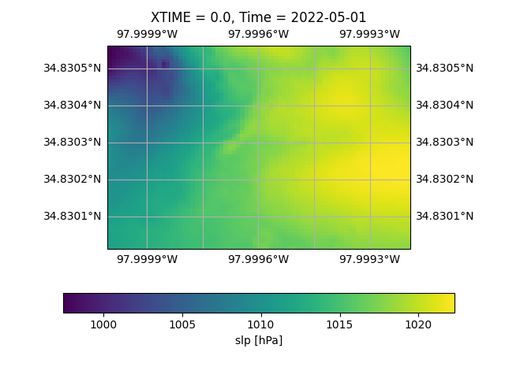

Note
Go to the end to download the full example code.
Build-in WRF-python#
The WRF-python Package is that a collection of diagnostic and interpolation routines for use with output from the Weather Research and Forecasting (WRF-ARW) Model.
The easyclimate package offers a streamlined and user-friendly interface designed to simplify
access to the functionalities of wrf-python, a powerful tool for working with Weather Research
and Forecasting (WRF) model data. One of the key advantages of easyclimate is its straightforward
installation process, which eliminates many of the complexities typically associated with setting
up scientific computing environments. Additionally, easyclimate ensures compatibility with
newer versions of numpy, a fundamental library for numerical computations in Python.
This compatibility not only enhances performance but also allows users to leverage the latest
features and optimizations available in modern numpy releases. By combining ease of use,
seamless installation, and up-to-date dependencies, easyclimate provides an efficient and
accessible solution for researchers and developers working with WRF model data.
This build-in package provides over 30 diagnostic calculations, several interpolation routines, and utilities to help with plotting via cartopy. The functionality is similar to what is provided by the NCL WRF package.
Hint
For more information, please visit wrf-python official document.
Introduction#
The API for wrf-python can be summarized as a variable computation/extraction routine, several interpolation routines, and a few plotting helper utilities. The API is kept as simple as possible to help minimize the learning curve for new programmers, students, and scientists. In the future, we plan to extend xarray for programmers desiring a more object oriented API, but this remains a work in progress.
The five most commonly used routines can be summarized as:
easyclimate.wrf.getvar()- Extracts WRF-ARW NetCDF variables and computes diagnostic variables that WRF does not compute (e.g. storm relative helicity). This is the routine that you will use most often.easyclimate.wrf.interplevel()- Interpolates a three-dimensional field to a horizontal plane at a specified level using simple (fast) linear interpolation (e.g. 850 hPa temperature).easyclimate.wrf.vertcross()- Interpolates a three-dimensional field to a vertical plane through a user-specified horizontal line (i.e. a cross section).easyclimate.wrf.interpline()- Interpolates a two-dimensional field to a user-specified line.easyclimate.wrf.vinterp()- Interpolates a three-dimensional field to user-specified ‘surface’ levels (e.g. theta-e levels). This is a smarter, albeit slower, version ofeasyclimate.wrf.interplevel().
Basic Usage#
Computing Diagnostic Variables#
The primary use for the easyclimate.wrf.getvar() function is to return diagnostic
variables that require a calculation, since WRF does not produce these
variables natively. These diagnostics include CAPE, storm relative helicity,
omega, sea level pressure, etc. A table of all available diagnostics can be
found here: Table of Available Diagnostics.
In the example below, sea level pressure is calculated and printed.
Tip
You can download following datasets here: Download wrfout_d01_2022-05-01_00_00_00.nc4
from __future__ import print_function
import easyclimate as ecl
import xarray as xr
import cartopy.crs as ccrs
import matplotlib.pyplot as plt
data = xr.open_dataset("wrfout_d01_2022-05-01_00_00_00.nc4")
ncfile = ecl.wrf.transfer_xarray2nctype(data)
# Or open it directly
ncfile = ecl.wrf.open_wrf_data("wrfout_d01_2022-05-01_00_00_00.nc4")
# Get the Sea Level Pressure
slp = ecl.wrf.getvar(ncfile, "slp")
slp
Extracting WRF NetCDF Variables#
In addition to computing diagnostic variables (see Computing Diagnostic Variables),
the easyclimate.wrf.getvar() function can be used to extract regular WRF-ARW output
NetCDF variables.
Disabling xarray and metadata#
Sometimes you just want a regular numpy array and don’t care about metadata. This is often the case when you are working with compiled extensions. Metadata can be disabled in one of two ways.
disable xarray completely
set the meta function parameter to False.
The example below illustrates both.
<class 'numpy.ma.MaskedArray'>
<class 'numpy.ma.MaskedArray'>
Extracting a Numpy Array from a DataArray#
If you need to convert an xarray.DataArray to a numpy.ndarray,
wrf-python provides the easyclimate.wrf.to_np() function for this purpose. Although
an xarray.DataArary object already contains the
xarray.DataArray.values attribute to extract the Numpy array, there is a
problem when working with compiled extensions. The behavior for xarray (and pandas)
is to convert missing/fill values to NaN, which may cause crashes when working
with compiled extensions. Also, some existing code may be designed to work with
numpy.ma.MaskedArray, and numpy arrays with NaN may not work with it.
The easyclimate.wrf.to_np() function does the following:
If no missing/fill values are used,
easyclimate.wrf.to_np()simply returns thexarray.DataArray.valuesattribute.If missing/fill values are used, then
easyclimate.wrf.to_np()replaces the NaN values with the _FillValue found in thexarray.DataArray.attrsattribute (required) and anumpy.ma.MaskedArrayis returned.
# Get the 3D CAPE, which contains missing values
cape_3d = ecl.wrf.getvar(ncfile, "cape_3d")
# Since there are missing values, this should return a MaskedArray
cape_3d_ndarray = ecl.wrf.to_np(cape_3d)
print(type(cape_3d_ndarray))
<class 'numpy.ma.MaskedArray'>
Interpolation Routines#
Interpolating to a Horizontal Level#
The easyclimate.wrf.interplevel() function is used to interpolate a 3D field to
a specific horizontal level, usually pressure or height.
Vertical Cross Sections#
The easyclimate.wrf.vertcross() function is used to create vertical cross sections.
To define a cross section, a start point and an end point needs to be specified.
Alternatively, a pivot point and an angle may be used. The start point,
end point, and pivot point are specified using a easyclimate.wrf.CoordPair object,
and coordinates can either be in grid (x,y) coordinates or (latitude,longitude)
coordinates. When using (latitude,longitude) coordinates, a NetCDF file object or
a easyclimate.wrf.WrfProj object must be provided.
The vertical levels can also be specified using the levels parameter. If not specified, then approximately 100 levels will be chosen in 1% increments.
Example: Using Start Point and End Point#
# Get the geopotential height (m) and pressure (hPa).
z = ecl.wrf.getvar(ncfile, "z")
p = ecl.wrf.getvar(ncfile, "pressure")
# Define a start point and end point in grid coordinates
start_point = ecl.wrf.CoordPair(x=0, y=(z.shape[-2]-1)//2)
end_point = ecl.wrf.CoordPair(x=-1, y=(z.shape[-2]-1)//2)
# Calculate the vertical cross section. By setting latlon to True, this
# also calculates the latitude and longitude coordinates along the cross
# section line and adds them to the 'xy_loc' metadata to help with plotting.
p_vert = ecl.wrf.vertcross(p, z, start_point=start_point, end_point=end_point, latlon=True)
p_vert
Example: Using Pivot Point and Angle#
# Get the geopotential height (m) and pressure (hPa).
z = ecl.wrf.getvar(ncfile, "z")
p = ecl.wrf.getvar(ncfile, "pressure")
# Define a pivot point and angle in grid coordinates, with the
# pivot point being the center of the grid.
pivot_point = ecl.wrf.CoordPair(x=(z.shape[-1]-1)//2, y=(z.shape[-2]-1)//2)
angle = 90.0
# Calculate the vertical cross section. By setting latlon to True, this
# also calculates the latitude and longitude coordinates along the line
# and adds them to the metadata to help with plotting labels.
p_vert = ecl.wrf.vertcross(p, z, pivot_point=pivot_point, angle=angle, latlon=True)
p_vert
Example: Using Lat/Lon Coordinates#
# Get the geopotential height (m) and pressure (hPa).
z = ecl.wrf.getvar(ncfile, "z")
p = ecl.wrf.getvar(ncfile, "pressure")
lats = ecl.wrf.getvar(ncfile, "lat")
lons = ecl.wrf.getvar(ncfile, "lon")
# Making the same horizontal line, but with lats/lons
start_lat = lats[(lats.shape[-2]-1)//2, 0]
end_lat = lats[(lats.shape[-2]-1)//2, -1]
start_lon = lons[(lats.shape[-2]-1)//2, 0]
end_lon = lons[(lats.shape[-2]-1)//2, -1]
# Cross section line using start_point and end_point.
start_point = ecl.wrf.CoordPair(lat=start_lat, lon=start_lon)
end_point = ecl.wrf.CoordPair(lat=end_lat, lon=end_lon)
# When using lat/lon coordinates, you must supply a WRF netcdf file object,
# or a projection object with the lower left latitude and lower left
# longitude points.
p_vert = ecl.wrf.vertcross(p, z, wrfin=ncfile, start_point=start_point, end_point=end_point, latlon=True)
p_vert
Example: Using Specified Vertical Levels#
# Get the geopotential height (m) and pressure (hPa).
z = ecl.wrf.getvar(ncfile, "z")
p = ecl.wrf.getvar(ncfile, "pressure")
lats = ecl.wrf.getvar(ncfile, "lat")
lons = ecl.wrf.getvar(ncfile, "lon")
# Making the same horizontal line, but with lats/lons
start_lat = lats[(lats.shape[-2]-1)//2, 0]
end_lat = lats[(lats.shape[-2]-1)//2, -1]
start_lon = lons[(lats.shape[-2]-1)//2, 0]
end_lon = lons[(lats.shape[-2]-1)//2, -1]
# Pressure using start_point and end_point. These were obtained using
start_point = ecl.wrf.CoordPair(lat=start_lat, lon=start_lon)
end_point = ecl.wrf.CoordPair(lat=end_lat, lon=end_lon)
# Specify vertical levels
levels = [1000., 2000., 3000.]
# Calculate the cross section
p_vert = ecl.wrf.vertcross(p, z, wrfin=ncfile, levels=levels, start_point=start_point, end_point=end_point, latlon=True)
p_vert
Interpolating Two-Dimensional Fields to a Line#
Two-dimensional fields can be interpolated along a line, in a manner similar to
the vertical cross section (see Vertical Cross Sections), using the
easyclimate.wrf.interpline() function. To define the line
to interpolate along, a start point and an end point needs to be specified.
Alternatively, a pivot point and an angle may be used. The start point,
end point, and pivot point are specified using a easyclimate.wrf.CoordPair object,
and coordinates can either be in grid (x,y) coordinates or (latitude,longitude)
coordinates. When using (latitude,longitude) coordinates, a NetCDF file object or
a easyclimate.wrf.WrfProj object must also be provided.
Example: Using Start Point and End Point#
# Get the 2m temperature
t2 = ecl.wrf.getvar(ncfile, "T2")
# Create a south-north line in the center of the domain using
# start point and end point
start_point = ecl.wrf.CoordPair(x=(t2.shape[-1]-1)//2, y=0)
end_point = ecl.wrf.CoordPair(x=(t2.shape[-1]-1)//2, y=-1)
# Calculate the vertical cross section. By setting latlon to True, this
# also calculates the latitude and longitude coordinates along the line
# and adds them to the metadata to help with plotting labels.
t2_line = ecl.wrf.interpline(t2, start_point=start_point, end_point=end_point, latlon=True)
t2_line
Example: Using Pivot Point and Angle#
# Get the 2m temperature
t2 = ecl.wrf.getvar(ncfile, "T2")
# Create a south-north line using pivot point and angle
pivot_point = ecl.wrf.CoordPair((t2.shape[-1]-1)//2, (t2.shape[-2]-1)//2)
angle = 0.0
# Calculate the vertical cross section. By setting latlon to True, this
# also calculates the latitude and longitude coordinates along the line
# and adds them to the metadata to help with plotting labels.
t2_line = ecl.wrf.interpline(t2, pivot_point=pivot_point, angle=angle, latlon=True)
t2_line
Example: Using Lat/Lon Coordinates#
t2 = ecl.wrf.getvar(ncfile, "T2")
lats = ecl.wrf.getvar(ncfile, "lat")
lons = ecl.wrf.getvar(ncfile, "lon")
# Select the latitude,longitude points for a vertical line through
# the center of the domain.
start_lat = lats[0, (lats.shape[-1]-1)//2]
end_lat = lats[-1, (lats.shape[-1]-1)//2]
start_lon = lons[0, (lons.shape[-1]-1)//2]
end_lon = lons[-1, (lons.shape[-1]-1)//2]
# Create the CoordPairs
start_point = ecl.wrf.CoordPair(lat=start_lat, lon=start_lon)
end_point = ecl.wrf.CoordPair(lat=end_lat, lon=end_lon)
# Calculate the interpolated line. To use latitude and longitude points,
# you must supply a WRF NetCDF file object, or a projection object along
# with the lower left latitude and lower left longitude points.
# Also, by setting latlon to True, this routine will
# also calculate the latitude and longitude coordinates along the line
# and adds them to the metadata to help with plotting labels.
t2_line = ecl.wrf.interpline(t2, wrfin=ncfile, start_point=start_point, end_point=end_point, latlon=True)
t2_line
Interpolating a 3D Field to a Surface Type#
The easyclimate.wrf.vinterp() is used to interpolate a field to a type of surface.
The available surfaces are pressure, geopotential height, theta, and theta-e.
The surface levels to interpolate also need to be specified.
tk = ecl.wrf.getvar(ncfile, "tk")
# Interpolate tk to theta-e levels
interp_levels = [200, 300, 500, 1000]
interp_field = ecl.wrf.vinterp(
ncfile,
field=tk,
vert_coord="eth",
interp_levels=interp_levels,
extrapolate=True,
field_type="tk",
log_p=True
)
interp_field
Lat/Lon ↔️ XY Routines#
wrf-python includes a set of routines for converting back and forth between
latitude,longitude space and x,y space. The methods are easyclimate.wrf.xy_to_ll(),
easyclimate.wrf.xy_to_ll_proj(), easyclimate.wrf.ll_to_xy(), easyclimate.wrf.ll_to_xy_proj().
The latitude, longitude, x, and y parameters to these methods
can contain sequences if multiple points are desired to be converted.
Example: With Single Coordinates#
Example: With Multiple Coordinates#
Mapping Helper Routines#
wrf-python includes several routines to assist with plotting, primarily for obtaining the mapping object used for cartopy, basemap, and PyNGL. For all three plotting systems, the mapping object can be determined directly from a variable when using xarray, or can be obtained from the WRF output file(s) if xarray is turned off.
Also included are utilities for extracting the geographic boundaries directly from xarray variables. This can be useful in situations where you only want to work with subsets (slices) of a large domain, but don’t want to define the map projection over the subset region.
Example: Example: Using a Variable with Cartopy#
In this example, we’re going to extract the cartopy mapping object from a diagnostic variable (slp), the lat,lon coordinates, and the geographic boundaries. Next, we’re going to take a subset of the diagnostic variable and extract the geographic boundaries. Some of the variables will be printed for demonstration.
# Use SLP for the example variable
slp = ecl.wrf.getvar(ncfile, "slp")
# Get the cartopy mapping object
cart_proj = ecl.wrf.get_cartopy(slp)
print (cart_proj)
# Get the latitude and longitude coordinate. This is usually needed for plotting.
lats, lons = ecl.wrf.latlon_coords(slp)
# Get the geobounds for the SLP variable
bounds = ecl.wrf.geo_bounds(slp)
print (bounds)
# Get the geographic boundaries for a subset of the domain
slp_subset = slp[30:50, 40:70]
slp_subset_bounds = ecl.wrf.geo_bounds(slp_subset)
print (slp_subset_bounds)
+proj=lcc +a=6370000.0 +b=6370000.0 +nadgrids=@null +lon_0=-98.0 +lat_0=34.830017 +x_0=0.0 +y_0=0.0 +lat_1=30.0 +lat_2=60.0 +no_defs +type=crs
GeoBounds(CoordPair(lat=28.171279907226562, lon=-93.64892578125), CoordPair(lat=39.632320404052734, lon=-66.00164794921875))
GeoBounds(CoordPair(lat=34.72391891479492, lon=-79.68817138671875), CoordPair(lat=37.374691009521484, lon=-68.31838989257812))
The parameters are passed into the plot as follows

<cartopy.mpl.gridliner.Gridliner object at 0x7f939c963490>
Example: Using WRF Output Files with Cartopy#
In this example, the cartopy mapping object and geographic boundaries will be extracted directly from the netcdf variable.
# Get the cartopy mapping object from the netcdf file
cart_proj = ecl.wrf.get_cartopy(wrfin=ncfile)
print (cart_proj)
# Get the geobounds from the netcdf file (by default, uses XLAT, XLONG)
# You can supply a variable name to get the staggered boundaries
bounds = ecl.wrf.geo_bounds(wrfin=ncfile)
print (bounds)
+proj=lcc +a=6370000.0 +b=6370000.0 +nadgrids=@null +lon_0=-98.0 +lat_0=34.830017 +x_0=0.0 +y_0=0.0 +lat_1=30.0 +lat_2=60.0 +no_defs +type=crs
GeoBounds(CoordPair(lat=28.171279907226562, lon=-93.64892578125), CoordPair(lat=39.632320404052734, lon=-66.00164794921875))
Using OpenMP#
Beginning in version 1.1, the Fortran computational routines in wrf-python make use of OpenMP directives. OpenMP enables the calculations to use multiple CPU cores, which can improve performance. In order to use OpenMP features, wrf-python has to be compiled with OpenMP enabled (most pre-built binary installations will have this enabled).
The Fortran computational routines have all been built using runtime
scheduling, instead of compile time scheduling, so that the user can choose the
scheduler type within their Python application. By default, the scheduling
type is set to easyclimate.wrf.OMP_SCHED_STATIC using only 1 CPU core, so
wrf-python will behave similarly to the non-OpenMP built versions. For the most
part, the difference between the scheduling types is minimal, with the exception
being the easyclimate.wrf.OMP_SCHED_DYNAMIC scheduler that is much slower due to
the additional overhead associated with it. For new users, using the default
scheduler should be sufficient.
Verifying that OpenMP is Enabled#
To take advantage of the performance improvements offered by OpenMP, wrf-python needs to have been compiled with OpenMP features enabled. The example below shows how you can determine if OpenMP is enabled in your build of wrf-python.
from easyclimate.wrf import omp_enabled
print(omp_enabled())
True
Determining the Number of Available Processors#
The example below shows how you can get the maximum number of processors that are available on your system.
from easyclimate.wrf import omp_get_num_procs
print(omp_get_num_procs())
4
Specifying the Number of Threads#
To enable multicore support via OpenMP, specifying the maximum number of OpenMP threads (i.e. CPU cores) is the only step that you need to take.
In the example below, easyclimate.wrf.omp_set_num_threads() is used to set the
maximum number of threads to use, and easyclimate.wrf.omp_get_max_threads() is used
to retrieve (and print) the maximum number of threads used.
Note
Although there is an OpenMP routine named easyclimate.wrf.omp_get_num_threads(),
this routine will always return 1 when called from the sequential part of
the program. Use easyclimate.wrf.omp_get_max_threads() to return the value set by
easyclimate.wrf.omp_set_num_threads().
from easyclimate.wrf import omp_set_num_threads, omp_get_max_threads
omp_set_num_threads(4)
print (omp_get_max_threads())
4
Setting a Different Scheduler Type#
When an OpenMP directive is encountered in the Fortran code, a scheduler is used to determine how the work is divided among the threads. All of the Fortran routines are compiled to use a ‘runtime’ scheduler, which indicates that the scheduler type (from the four listed below) is to be chosen at runtime (i.e. inside a Python script)
By default, the scheduler chosen is the easyclimate.wrf.OMP_SCHED_STATIC scheduler,
which should be sufficient for most users. However, OpenMP and wrf-python
include the following options for the scheduler type:
easyclimate.wrf.OMP_SCHED_STATICeasyclimate.wrf.OMP_SCHED_DYNAMICeasyclimate.wrf.OMP_SCHED_GUIDEDeasyclimate.wrf.OMP_SCHED_AUTO
Refer to the
OpenMP Specification (PDF file).
for more information about these scheduler types. In local testing,
easyclimate.wrf.OMP_SCHED_GUIDED produced the best results, but
differences between easyclimate.wrf.OMP_SCHED_STATIC,
easyclimate.wrf.OMP_SCHED_GUIDED, and
easyclimate.wrf.OMP_SCHED_AUTO were minor. However,
easyclimate.wrf.OMP_SCHED_DYNAMIC produced noticeably slower results
due to the overhead of using a dynamic scheduler.
When setting a scheduler type, the easyclimate.wrf.omp_set_schedule() takes two
arguments. The first is the scheduler type (one from the list above), and the
second optional argument is a modifier, which is usually referred as the chunk
size. If the modifier/chunk_size is set to 0, then the OpenMP default
implementation is used. For easyclimate.wrf.OMP_SCHED_AUTO, the
modifier is ignored.
If you are new to OpenMP and all this sounds confusing, don’t worry about setting a scheduler type. The default static scheduler will be good enough.
In the example below, the scheduler type is set to
easyclimate.wrf.OMP_SCHED_GUIDED and uses the default chunk size of 0. The
scheduler type is then read back using easyclimate.wrf.omp_get_schedule()
and printed.
from easyclimate.wrf import omp_set_schedule, omp_get_schedule, OMP_SCHED_GUIDED
omp_set_schedule(OMP_SCHED_GUIDED, 0)
sched, modifier = omp_get_schedule()
print(sched, modifier)
3 1
Notice that the printed scheduler type (sched variable) is set to a
value of 3, which is the actual integer constant value for the
easyclimate.wrf.OMP_SCHED_GUIDED scheduler type. The modifier is returned as a
value of 1, which is different than the 0 that was supplied to the
easyclimate.wrf.omp_set_schedule() routine. This is because the 0 tells OpenMP to use
its own default value for the scheduler, which is 1 for this type of scheduler.
Table of Available Diagnostics#
Variable Name |
Description |
Available Units |
Additional Keyword Arguments |
|---|---|---|---|
avo |
Absolute Vorticity |
10-5 s-1 |
|
eth/theta_e |
Equivalent Potential Temperature |
K degC degF |
units (str) : Set to desired units. Default is ‘K’. |
cape_2d |
2D CAPE (MCAPE/MCIN/LCL/LFC) |
J kg-1 ; J kg-1 ; m ; m |
missing (float): Fill value for output only |
cape_3d |
3D CAPE and CIN |
J kg-1 |
missing (float): Fill value for output only |
ctt |
Cloud Top Temperature |
degC K degF |
fill_nocloud (boolean): Set to True to use fill values for cloud free regions rather than surface temperature. Default is False. missing (float): The fill value to use when fill_nocloud is True. opt_thresh (float): The optical depth required to trigger the cloud top temperature calculation. Default is 1.0. units (str) : Set to desired units. Default is ‘degC’. |
cloudfrac |
Cloud Fraction |
% |
vert_type (str): The vertical coordinate type for the cloud thresholds. Must be ‘height_agl’, ‘height_msl’, or ‘pres’. Default is ‘height_agl’. low_thresh (float): The low cloud threshold (meters for ‘height_agl’ and ‘height_msl’, pascals for ‘pres’). Default is 300 m (97000 Pa) mid_thresh (float): The mid cloud threshold (meters for ‘height_agl’ and ‘height_msl’, pascals for ‘pres’). Default is 2000 m (80000 Pa) high_thresh (float): The high cloud threshold (meters for ‘height_agl’ and ‘height_msl’, pascals for ‘pres’). Default is 6000 m (45000 Pa) |
dbz |
Reflectivity |
dBZ |
do_variant (boolean): Set to True to enable variant calculation. Default is False. do_liqskin (boolean): Set to True to enable liquid skin calculation. Default is False. |
mdbz |
Maximum Reflectivity |
dBZ |
do_variant (boolean): Set to True to enable variant calculation. Default is False. do_liqskin (boolean): Set to True to enable liquid skin calculation. Default is False. |
geopt/geopotential |
Geopotential for the Mass Grid |
m2 s-2 |
|
geopt_stag |
Geopotential for the Vertically Staggered Grid |
m2 s-2 |
|
helicity |
Storm Relative Helicity |
m2 s-2 |
top (float): The top level for the calculation in meters. Default is 3000.0. |
lat |
Latitude |
decimal degrees |
|
lon |
Longitude |
decimal degrees |
|
omg/omega |
Omega |
Pa s-1 |
|
p/pres |
Full Model Pressure (in specified units) |
Pa hPa mb torr mmhg atm |
units (str) : Set to desired units. Default is ‘Pa’. |
pressure |
Full Model Pressure (hPa) |
hPa |
|
pvo |
Potential Vorticity |
PVU |
|
pw |
Precipitable Water |
kg m-2 |
|
rh |
Relative Humidity |
% |
|
rh2 |
2m Relative Humidity |
% |
|
slp |
Sea Level Pressure |
hPa hPa mb torr mmhg atm |
units (str) : Set to desired units. Default is ‘hPa’. |
T2 |
2m Temperature |
K |
|
ter |
Model Terrain Height |
m km dm ft mi |
units (str) : Set to desired units. Default is ‘m’. |
td2 |
2m Dew Point Temperature |
degC K degF |
units (str) : Set to desired units. Default is ‘degC’. |
td |
Dew Point Temperature |
degC K degF |
units (str) : Set to desired units. Default is ‘degC’. |
tc |
Temperature in Celsius |
degC |
|
th/theta |
Potential Temperature |
K degC degF |
units (str) : Set to desired units. Default is ‘K’. |
temp |
Temperature (in specified units) |
K degC degF |
units (str) : Set to desired units. Default is ‘K’. |
tk |
Temperature in Kelvin |
K |
|
times |
Times in the File or Sequence |
||
xtimes |
XTIME Coordinate (if applicable) |
minutes since start of model run |
|
tv |
Virtual Temperature |
K degC degF |
units (str) : Set to desired units. Default is ‘K’. |
twb |
Wet Bulb Temperature |
K degC degF |
units (str) : Set to desired units. Default is ‘K’. |
updraft_helicity |
Updraft Helicity |
m2 s-2 |
bottom (float): The bottom level for the calculation in meters. Default is 2000.0. top (float): The top level for the calculation in meters. Default is 5000.0. |
ua |
U-component of Wind on Mass Points |
m s-1 km h-1 mi h-1 kt ft s-1 |
units (str) : Set to desired units. Default is ‘m s-1’. |
va |
V-component of Wind on Mass Points |
m s-1 km h-1 mi h-1 kt ft s-1 |
units (str) : Set to desired units. Default is ‘m s-1’. |
wa |
W-component of Wind on Mass Points |
m s-1 km h-1 mi h-1 kt ft s-1 |
units (str) : Set to desired units. Default is ‘m s-1’. |
uvmet10 |
10 m U and V Components of Wind Rotated to Earth Coordinates |
m s-1 km h-1 mi h-1 kt ft s-1 |
units (str) : Set to desired units. Default is ‘m s-1’. |
uvmet |
U and V Components of Wind Rotated to Earth Coordinates |
m s-1 km h-1 mi h-1 kt ft s-1 |
units (str) : Set to desired units. Default is ‘m s-1’. |
wspd_wdir |
Wind Speed and Direction (wind_from_direction) in Grid Coordinates |
m s-1 km h-1 mi h-1 kt ft s-1 |
units (str) : Set to desired units. Default is ‘m s-1’. |
wspd_wdir10 |
10m Wind Speed and Direction (wind_from_direction) in Grid Coordinates |
m s-1 km h-1 mi h-1 kt ft s-1 |
units (str) : Set to desired units. Default is ‘m s-1’. |
uvmet_wspd_wdir |
Wind Speed and Direction (wind_from_direction) Rotated to Earth Coordinates |
m s-1 km h-1 mi h-1 kt ft s-1 |
units (str) : Set to desired units. Default is ‘m s-1’. |
uvmet10_wspd_wdir |
10m Wind Speed and Direction (wind_from_direction) Rotated to Earth Coordinates |
m s-1 km h-1 mi h-1 kt ft s-1 |
units (str) : Set to desired units. Default is ‘m s-1’. |
z/height |
Model Height for Mass Grid |
m km dm ft mi |
msl (boolean): Set to False to return AGL values. True is for MSL. Default is True. units (str) : Set to desired units. Default is ‘m’. |
height_agl |
Model Height for Mass Grid (AGL) |
m km dm ft mi |
units (str) : Set to desired units. Default is ‘m’. |
zstag |
Model Height for Vertically Staggered Grid |
m km dm ft mi |
msl (boolean): Set to False to return AGL values. True is for MSL. Default is True. units (str) : Set to desired units. Default is ‘m’. |
Table of Subproduct Diagnostics#
Some diagnostics (e.g. cape_2d) include multiple products in its
output. These products have been broken out in to individual diagnostics
to help those utilities that are unable to work with multiple outputs.
These individual diagnostics can be requested like any other diagnostic
using easyclimate.wrf.getvar(). These are summarized in the table below.
Variable Name |
Calculated From |
Description |
Available Units |
Additional Keyword Arguments |
|---|---|---|---|---|
mcape |
cape_2d |
2D Max CAPE |
J kg-1 |
missing (float): Fill value for output only |
mcin |
cape_2d |
2D Max CIN |
J kg-1 |
missing (float): Fill value for output only |
lcl |
cape_2d |
2D Lifted Condensation Level |
J kg-1 |
missing (float): Fill value for output only |
lfc |
cape_2d |
2D Level of Free Convection |
J kg-1 |
missing (float): Fill value for output only |
cape3d_only |
cape_3d |
3D CAPE |
J kg-1 |
missing (float): Fill value for output only |
cin3d_only |
cape_3d |
3D CIN |
J kg-1 |
missing (float): Fill value for output only |
low_cloudfrac |
cloudfrac |
Cloud Fraction for Low Clouds |
% |
vert_type (str): The vertical coordinate type for the cloud thresholds. Must be ‘height_agl’, ‘height_msl’, or ‘pres’. Default is ‘height_agl’. low_thresh (float): The low cloud threshold (meters for ‘height_agl’ and ‘height_msl’, pascals for ‘pres’). Default is 300 m (97000 Pa) mid_thresh (float): The mid cloud threshold (meters for ‘height_agl’ and ‘height_msl’, pascals for ‘pres’). Default is 2000 m (80000 Pa) high_thresh (float): The high cloud threshold (meters for ‘height_agl’ and ‘height_msl’, pascals for ‘pres’). Default is 6000 m (45000 Pa) |
mid_cloudfrac |
cloudfrac |
Cloud Fraction for Mid Clouds |
% |
vert_type (str): The vertical coordinate type for the cloud thresholds. Must be ‘height_agl’, ‘height_msl’, or ‘pres’. Default is ‘height_agl’. low_thresh (float): The low cloud threshold (meters for ‘height_agl’ and ‘height_msl’, pascals for ‘pres’). Default is 300 m (97000 Pa) mid_thresh (float): The mid cloud threshold (meters for ‘height_agl’ and ‘height_msl’, pascals for ‘pres’). Default is 2000 m (80000 Pa) high_thresh (float): The high cloud threshold (meters for ‘height_agl’ and ‘height_msl’, pascals for ‘pres’). Default is 6000 m (45000 Pa) |
high_cloudfrac |
cloudfrac |
Cloud Fraction for High Clouds |
% |
vert_type (str): The vertical coordinate type for the cloud thresholds. Must be ‘height_agl’, ‘height_msl’, or ‘pres’. Default is ‘height_agl’. low_thresh (float): The low cloud threshold (meters for ‘height_agl’ and ‘height_msl’, pascals for ‘pres’). Default is 300 m (97000 Pa) mid_thresh (float): The mid cloud threshold (meters for ‘height_agl’ and ‘height_msl’, pascals for ‘pres’). Default is 2000 m (80000 Pa) high_thresh (float): The high cloud threshold (meters for ‘height_agl’ and ‘height_msl’, pascals for ‘pres’). Default is 6000 m (45000 Pa) |
uvmet_wspd |
uvmet_wspd_wdir |
Wind Speed Rotated to Earth Coordinates |
m s-1 km h-1 mi h-1 kt ft s-1 |
units (str) : Set to desired units. Default is ‘m s-1’. |
uvmet_wdir |
uvmet_wspd_wdir |
Wind Direction (wind_from_direction) Rotated to Earth Coordinates |
m s-1 km h-1 mi h-1 kt ft s-1 |
units (str) : Set to desired units. Default is ‘m s-1’. |
uvmet10_wspd |
uvmet10_wspd_wdir |
10m Wind Speed Rotated to Earth Coordinates |
m s-1 km h-1 mi h-1 kt ft s-1 |
units (str) : Set to desired units. Default is ‘m s-1’. |
uvmet10_wdir |
uvmet10_wspd_wdir |
10m Wind Direction (wind_from_direction) Rotated to Earth Coordinates |
m s-1 km h-1 mi h-1 kt ft s-1 |
units (str) : Set to desired units. Default is ‘m s-1’. |
wspd |
wspd_wdir |
Wind Speed in Grid Coordinates |
m s-1 km h-1 mi h-1 kt ft s-1 |
units (str) : Set to desired units. Default is ‘m s-1’. |
wdir |
wspd_wdir |
Wind Direction (wind_from_direction) in Grid Coordinates |
m s-1 km h-1 mi h-1 kt ft s-1 |
units (str) : Set to desired units. Default is ‘m s-1’. |
wspd10 |
wspd_wdir10 |
10m Wind Speed in Grid Coordinates |
m s-1 km h-1 mi h-1 kt ft s-1 |
units (str) : Set to desired units. Default is ‘m s-1’. |
wdir10 |
wspd_wdir10 |
10m Wind Direction (wind_from_direction) in Grid Coordinates |
m s-1 km h-1 mi h-1 kt ft s-1 |
units (str) : Set to desired units. Default is ‘m s-1’. |
Total running time of the script: (0 minutes 1.297 seconds)